Which pattern lets subclasses decide which concrete class to instantiate through one overridable creation method?
- Factory Method
- Abstract Factory
- Singleton
- Builder
Show answer
A. Factory Method
Factory Method is a class-creational pattern: an abstract creator declares one factory method that returns a product interface, and each concrete creator subclass overrides it to decide which concrete product to instantiate. The creator’s other methods use the product only through its interface. The lecture works through a computer store (StandardComputerStore makes StandardComputer, AdvancedComputerStore makes AdvancedComputer) in C++ and Java, lists the design steps and benefits, contrasts it with Abstract Factory, and practises it on document readers and notification senders.
Define an interface for creating an object, but let subclasses decide which class to instantiate; defer instantiation to subclasses.
Creator (abstract, declares the factory method), ConcreteCreator (overrides it), Product (interface), ConcreteProduct.
Factory Method creates one product through one overridable method; Abstract Factory creates a family through a factory object with several methods.
Code is separated from product-specific classes, so new products need only a new creator subclass (OCP); easier reuse, maintenance and testing.
Not yet on a past paper, but it fits the Final’s “which pattern? draw the class diagram” format (Final 252 Q6 did this for Builder and Singleton). Know the four roles, the code shape (abstract createX() overridden in subclasses) and the difference from Abstract Factory.
Every original slide is shown unchanged. Yellow marks on a slide point to a numbered note: hover or tap a mark to jump to its note, and hover a note to see its marks. Questions tagged Past exam appeared on a real paper; Prediction questions are likely angles, not confirmed.
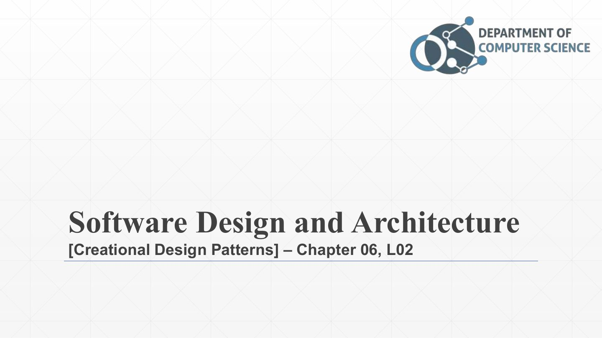
Second creational-patterns lecture: Factory Method, the single-product cousin of Abstract Factory.
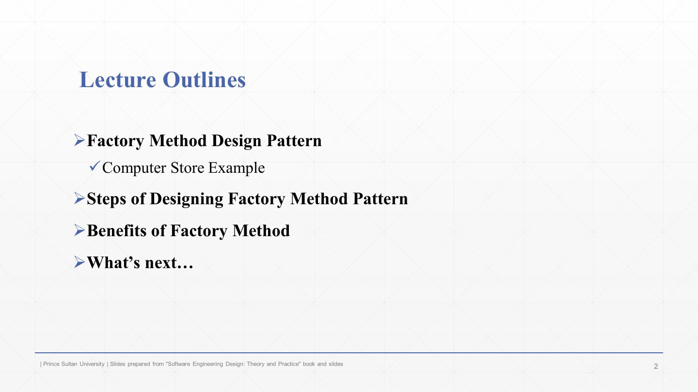
The pattern and the computer-store example.
The design steps.
The benefits.
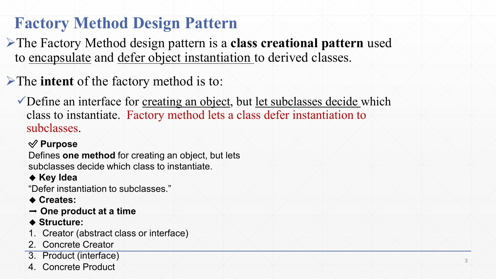
Factory Method is a class creational pattern (it works through inheritance, so its relationships are fixed at design time) that encapsulates object creation and defers instantiation to derived classes.
Intent: define an interface for creating an object, but let subclasses decide which class to instantiate.
It creates one product at a time through one method. Key idea: “defer instantiation to subclasses”.
Structure: (1) Creator, an abstract class or interface that declares the factory method; (2) ConcreteCreator, which overrides it; (3) Product, the interface every product implements; (4) ConcreteProduct.
Which pattern lets subclasses decide which concrete class to instantiate through one overridable creation method?
A. Factory Method
State the intent of the Factory Method and name its four participants.
Define an interface for creating an object, but let subclasses decide which class to instantiate (defer instantiation to subclasses). Participants: Creator (declares the factory method), ConcreteCreator (overrides it), Product (interface), ConcreteProduct.
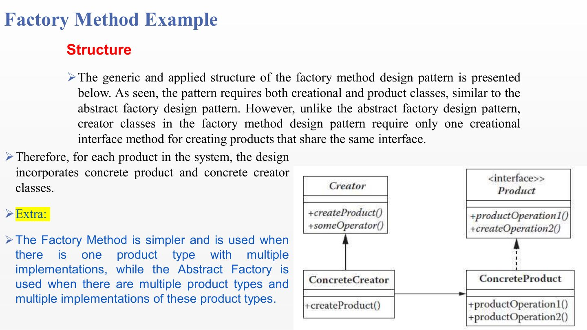
Like Abstract Factory it has creator and product classes, but the creator needs only one creational method, for products that share the same interface.
So for each product in the system there is one concrete product and one concrete creator class.
Rule of thumb: Factory Method for one product type with several implementations; Abstract Factory for several product types, each with several implementations.
Reading the generic diagram:
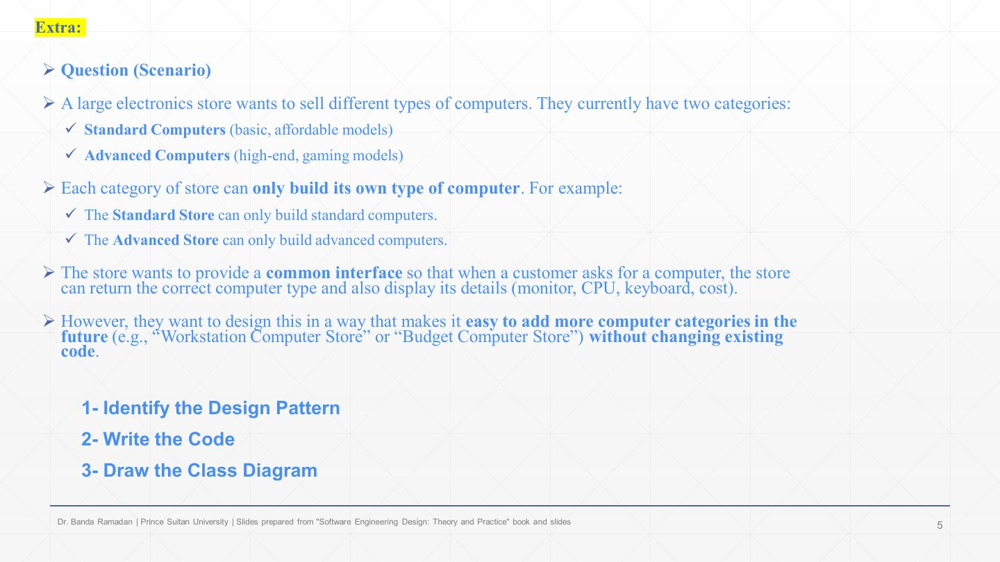
The scenario: an electronics store sells standard (affordable) and advanced (gaming) computers.
Each store type builds only its own kind: the Standard Store builds standard computers, the Advanced Store advanced ones.
Customers get a common interface: ask a store for a computer and display its details (monitor, CPU, keyboard, cost).
New categories (Workstation Store, Budget Store) must be addable without changing existing code.
Tasks: identify the pattern (Factory Method: one product type, a creator subclass per variant), write the code, draw the class diagram.
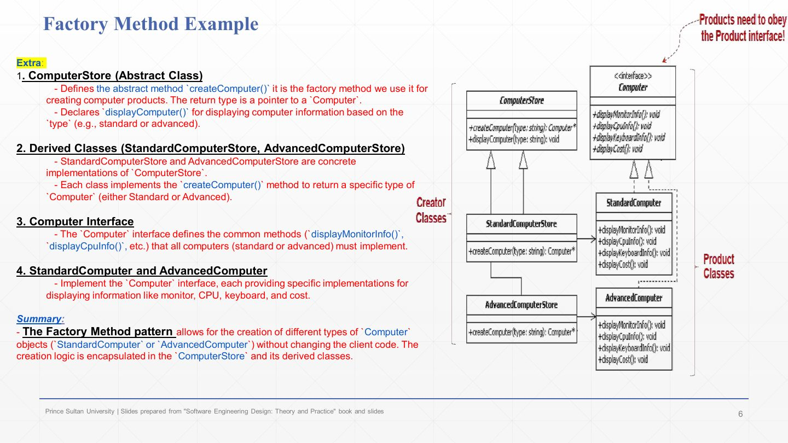
ComputerStore (abstract creator): declares the abstract factory method createComputer(type), returning a Computer, and displayComputer(type), which displays the computer that createComputer produces.
StandardComputerStore and AdvancedComputerStore (concrete creators) each implement createComputer() to return their own kind of Computer.
Computer (product interface): displayMonitorInfo(), displayCpuInfo(), displayKeyboardInfo(), displayCost(). Note the italics in the diagram: abstract operations.
StandardComputer and AdvancedComputer (concrete products) implement those display methods.
Summary: different Computers are created without changing client code; the creation logic lives in ComputerStore and its subclasses.
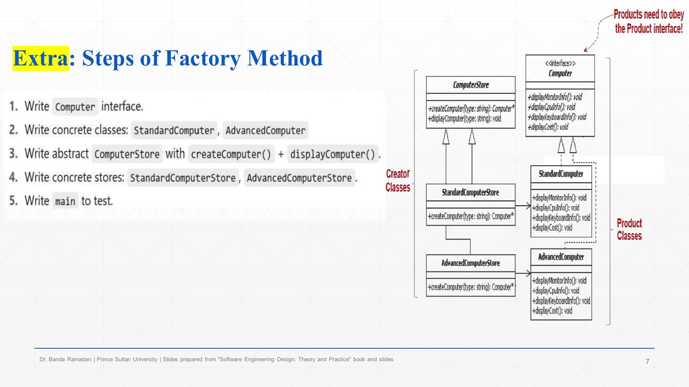
The writing order: (1) the Computer interface; (2) the concrete computers StandardComputer, AdvancedComputer; (3) the abstract ComputerStore with createComputer() and displayComputer(); (4) the concrete stores; (5) main to test. Products first, then creators, then the client: the same order you should use in an exam answer.
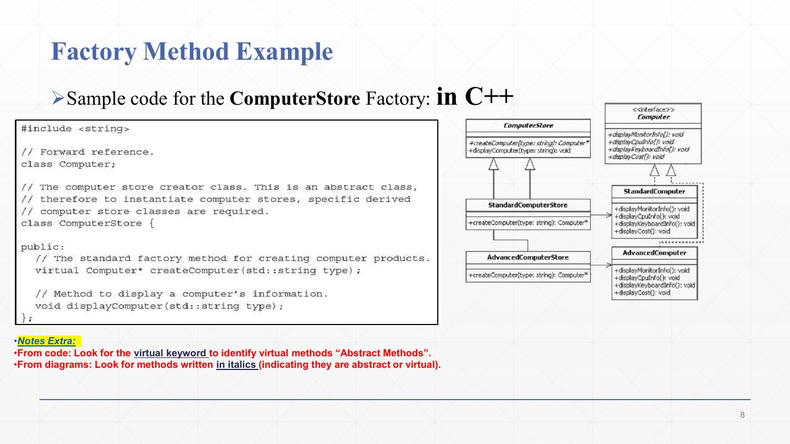
The C++ creator class:
| Code | What it does |
|---|---|
class Computer; | Forward declaration: ComputerStore only needs to know the type exists. |
class ComputerStore { | The creator. It is abstract, so specific derived stores are needed. |
virtual Computer* createComputer(std::string type); | The factory method: virtual lets derived classes override it (made pure virtual with = 0 in a strictly abstract creator). |
void displayComputer(std::string type); }; | A normal method that will use the created computer. |
How to spot abstract methods: in code, look for the virtual keyword (C++) or abstract (Java); in UML diagrams, methods in italics.
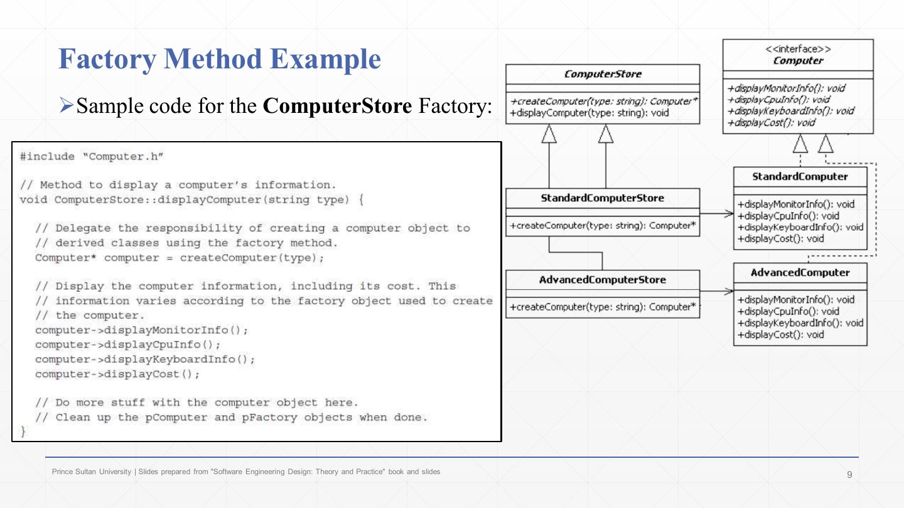
displayComputer in C++:
| Code | What it does |
|---|---|
void ComputerStore::displayComputer(string type) { | Defined once, in the abstract creator. |
Computer* computer = createComputer(type); | Delegates creation to the derived class through the factory method: this line is the whole pattern. |
computer->displayMonitorInfo(); computer->displayCpuInfo(); | Uses the product only through the Computer interface. |
computer->displayKeyboardInfo(); computer->displayCost(); } | The output differs by store, but this code never changes. |
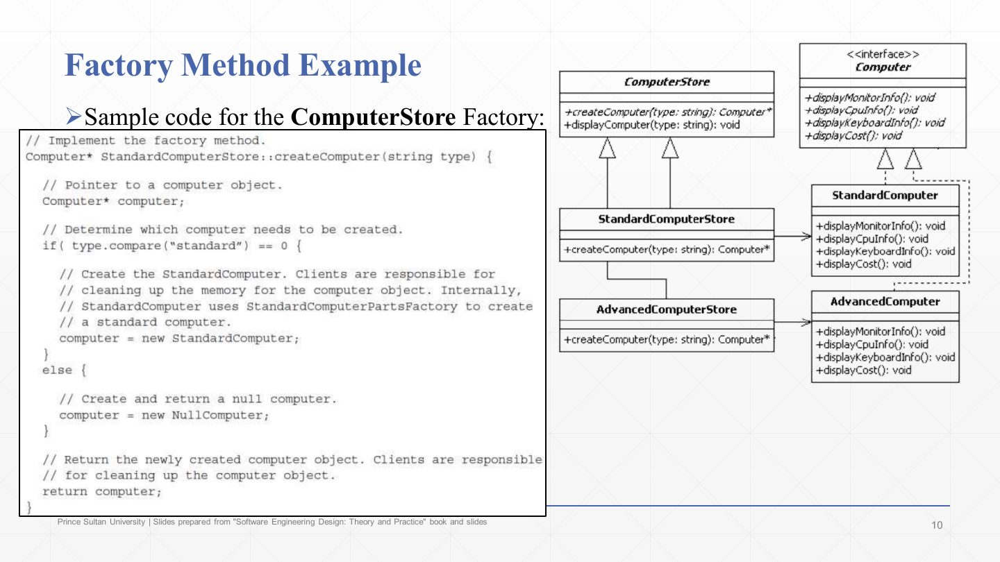
A concrete creator in C++:
| Code | What it does |
|---|---|
Computer* StandardComputerStore::createComputer(string type) { | The standard store’s override of the factory method. |
if (type.compare("standard") == 0) computer = new StandardComputer; | It can only build standard computers. |
else computer = new NullComputer; | Anything else returns a NullComputer: an object that does nothing, so callers never get a null pointer. |
return computer; } | Clients are responsible for freeing the returned object (C++). |
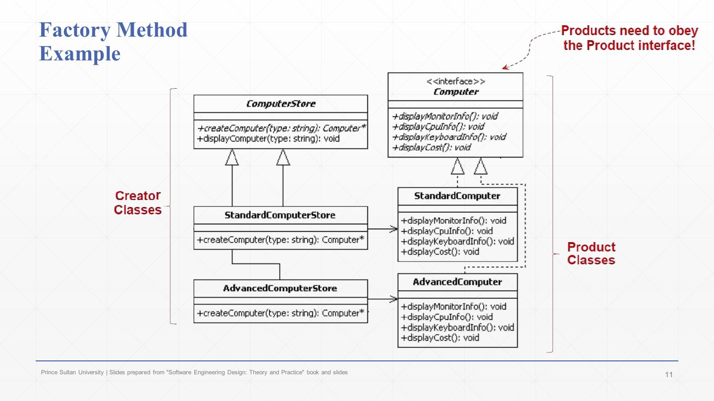
The complete example diagram. Creator classes: abstract ComputerStore (createComputer(type): Computer, displayComputer(type)) with subclasses StandardComputerStore and AdvancedComputerStore.
Product classes: «interface» Computer, realised by StandardComputer and AdvancedComputer; the arrows from each store to its computer show which product each creator makes. Products must obey the product interface.
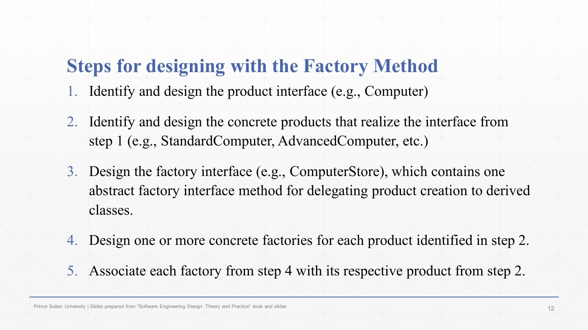
Step 1: identify and design the product interface (Computer).
Step 2: design the concrete products that realise it (StandardComputer, AdvancedComputer).
Step 3: design the factory (creator) interface, ComputerStore, with one abstract factory method that delegates creation to derived classes.
Step 4: design one concrete factory (creator) per product from step 2.
Step 5: associate each factory with its product.
Apply the Factory Method to a logistics app where RoadLogistics creates Trucks and SeaLogistics creates Ships. Name the classes and the factory method.
Product interface: Transport (deliver()). Concrete products: Truck, Ship. Abstract creator: Logistics with abstract createTransport(): Transport and planDelivery() that calls createTransport().deliver(). Concrete creators: RoadLogistics returns new Truck(); SeaLogistics returns new Ship().
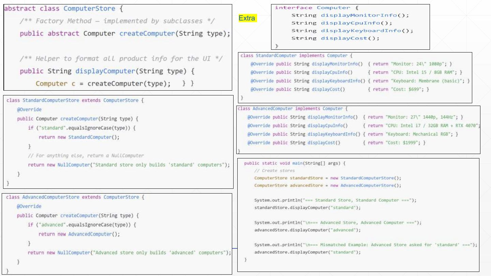
The same example in Java:
| Code | What it does |
|---|---|
abstract class ComputerStore { public abstract Computer createComputer(String type); | The factory method, implemented by subclasses. |
public String displayComputer(String type) { Computer c = createComputer(type); … } | A helper that formats the product info, using only Computer. |
class StandardComputerStore extends ComputerStore { @Override public Computer createComputer(String type) { | The standard creator… |
if ("standard".equalsIgnoreCase(type)) return new StandardComputer(); | …builds a StandardComputer… |
return new NullComputer("Standard store only builds 'standard' computers"); } } | …or a NullComputer with a message. |
class AdvancedComputerStore extends ComputerStore { … new AdvancedComputer() … } | The advanced creator, same shape. |
Products and client:
| Code | What it does |
|---|---|
interface Computer { String displayMonitorInfo(); String displayCpuInfo(); String displayKeyboardInfo(); String displayCost(); } | The product interface. |
class StandardComputer implements Computer { … "Monitor: 24\" 1080p" … "Cost: $699" } | Concrete products return their own details. |
ComputerStore standardStore = new StandardComputerStore(); standardStore.displayComputer("standard"); | The client works through ComputerStore. |
advancedStore.displayComputer("standard"); | The mismatch example: the advanced store asked for a standard computer returns the NullComputer message. |
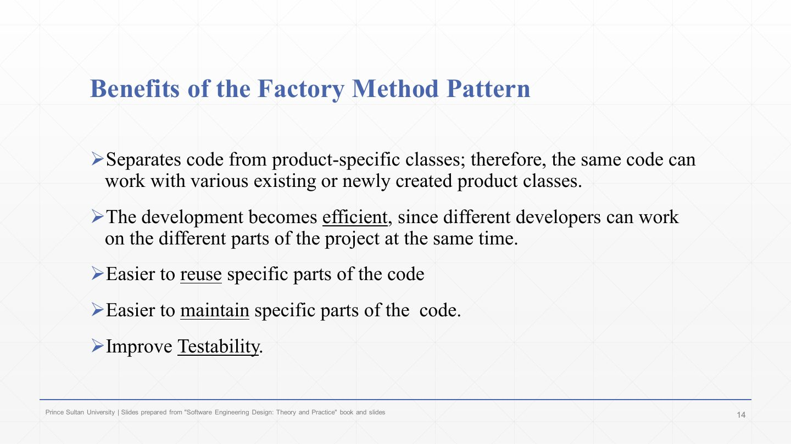
It separates code from product-specific classes, so the same code works with existing and newly created products. New product = new creator subclass, no edits elsewhere (OCP).
Development is more efficient: different developers can work on different creators and products at the same time.
Specific parts are easier to reuse and maintain.
Testability improves: a test can subclass the creator to return a fake product.
True or false: the Factory Method helps follow the Open-Closed Principle when new product types are added.
True — A new product needs a new concrete product and a new creator subclass; existing creators and client code are not modified.
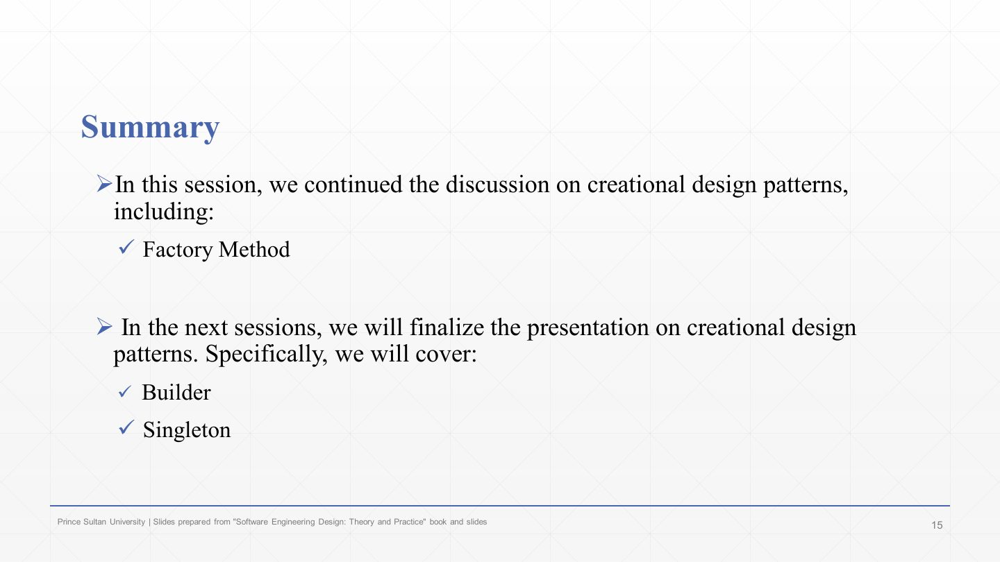
This lecture: Factory Method.
Next: Builder and Singleton, which complete the creational patterns (both were on Final 252).
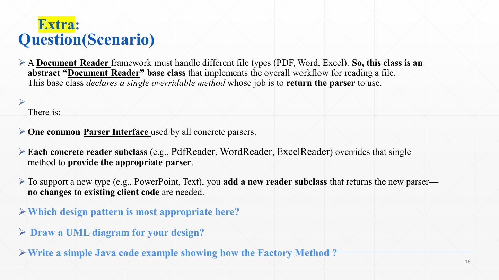
Scenario: a document-reader framework handles PDF, Word and Excel files. An abstract DocumentReader base class implements the overall reading workflow.
It declares a single overridable method whose job is to return the parser to use: that is the factory method.
One common Parser interface is used by all concrete parsers (the product).
Each concrete reader (PdfReader, WordReader, ExcelReader) overrides that method to return the right parser; a new type (PowerPoint, Text) means a new reader subclass, with no client changes.
Answer: Factory Method. The next slides give the UML and code.
A DocumentReader framework must create the right Parser for PDF, Word or Excel files through one overridable method. Which pattern, and what are the classes?
Factory Method. Parser is the product interface (parse()); PdfParser, WordParser, ExcelParser implement it. DocumentReader is the abstract creator with abstract createParser(): Parser and a read() workflow that calls createParser().parse(). PdfReader, WordReader and ExcelReader extend DocumentReader and return their parser.
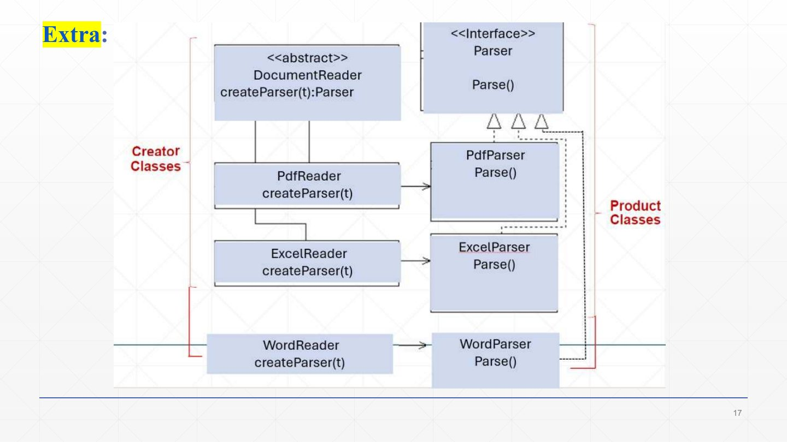
The solution diagram: «abstract» DocumentReader with createParser(t): Parser; PdfReader, ExcelReader and WordReader extend it (creator classes).
«Interface» Parser with Parse(), realised by PdfParser, ExcelParser and WordParser (product classes). Each reader points to the parser it creates.
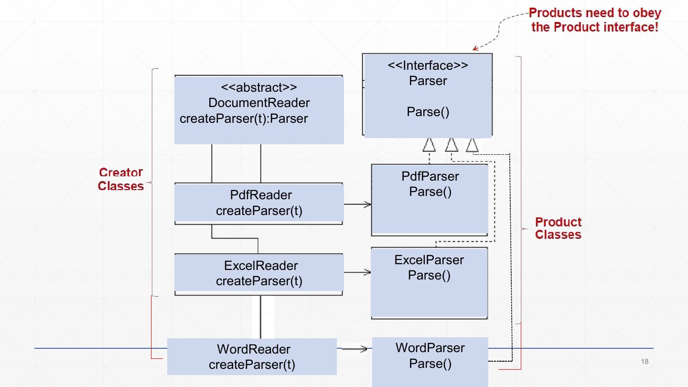
The same diagram labelled with the pattern’s roles: creator classes on the left (DocumentReader and its readers), product classes on the right (Parser and its parsers). Products must obey the Parser interface; each concrete reader is paired with exactly one concrete parser.
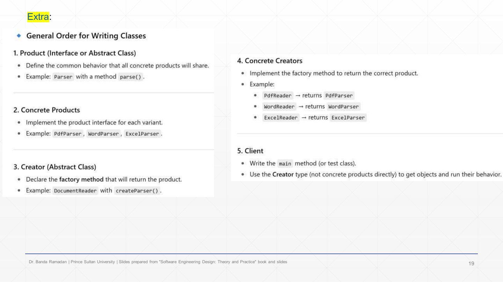
1. Product: the common behaviour (Parser with parse()).
2. Concrete products: one per variant (PdfParser, WordParser, ExcelParser).
3. Creator: the abstract class that declares the factory method (DocumentReader with createParser()).
4. Concrete creators: implement the factory method to return the right product (PdfReader → PdfParser…).
5. Client: main uses the creator type, never the concrete products directly.
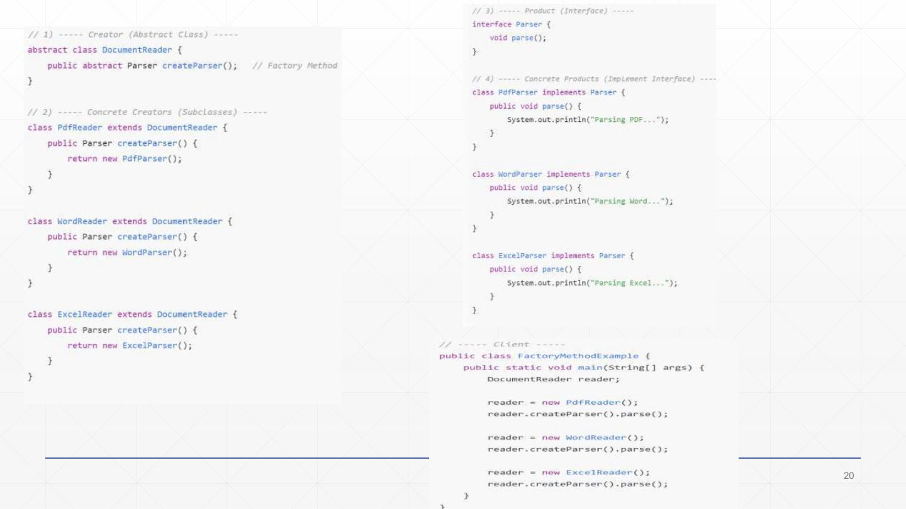
The Java solution:
| Code | What it does |
|---|---|
abstract class DocumentReader { public abstract Parser createParser(); // Factory Method } | 1) The creator. |
class PdfReader extends DocumentReader { public Parser createParser() { return new PdfParser(); } } | 2) Concrete creators, one per format (WordReader, ExcelReader are the same). |
interface Parser { void parse(); } | 3) The product. |
class PdfParser implements Parser { public void parse() { System.out.println("Parsing PDF..."); } } | 4) Concrete products. |
DocumentReader reader; reader = new PdfReader(); reader.createParser().parse(); | 5) The client holds a DocumentReader; switching to new WordReader() changes the output to “Parsing Word...” without other changes. |
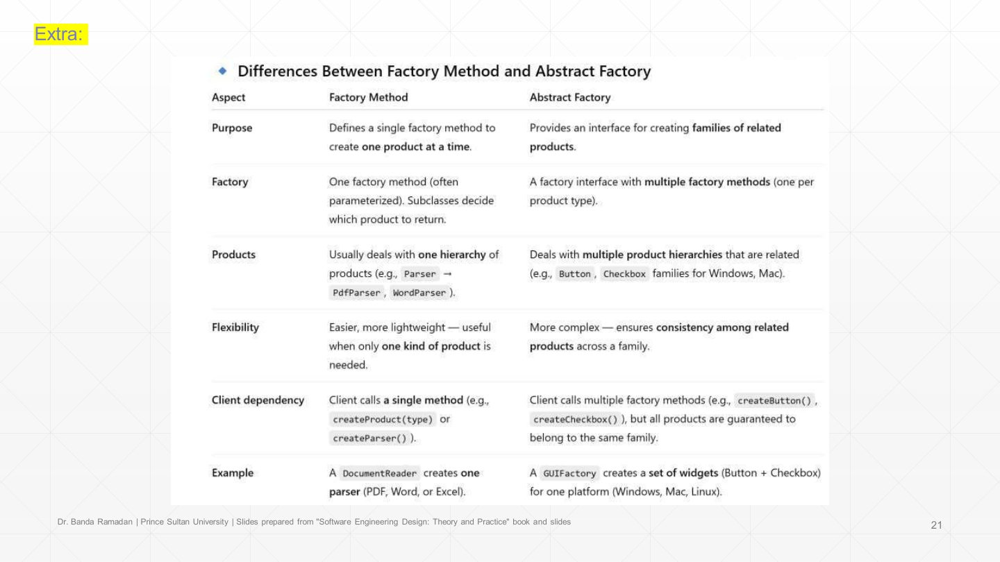
Purpose: Factory Method defines a single factory method to create one product at a time; Abstract Factory provides an interface for creating families of related products.
Factory and products: one (often parameterised) method whose subclasses decide the product, with one product hierarchy (Parser → PdfParser, WordParser); versus a factory interface with one method per product type and several related hierarchies (Button, Checkbox for Windows and Mac).
Flexibility and client: Factory Method is lighter, used when only one kind of product is needed, and the client calls a single method (createParser()); Abstract Factory is more complex but guarantees consistency across a family, and the client calls several methods (createButton(), createCheckbox()). Examples: DocumentReader creates one parser; GUIFactory creates a set of widgets.
Give two differences between the Factory Method and the Abstract Factory patterns.
Factory Method creates one product through one overridable method in a creator subclass (inheritance, class scope); Abstract Factory creates a family of related products through a factory object with one method per product type (composition, object scope). Factory Method has one product hierarchy; Abstract Factory has several related hierarchies and guarantees the family is consistent.
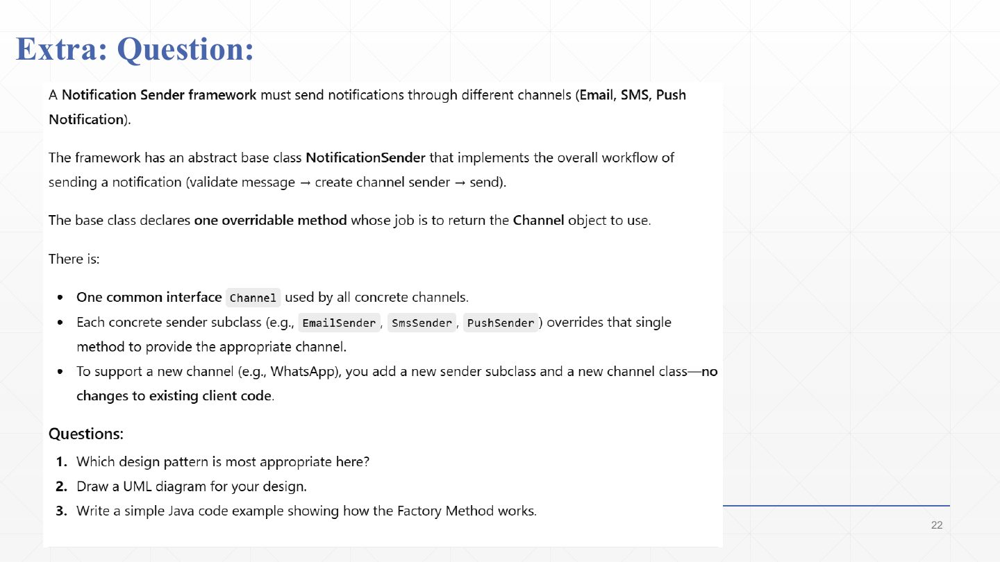
A second exercise: a notification-sender framework sends messages through Email, SMS or Push. The abstract base class NotificationSender implements the workflow (validate message → create channel → send).
It declares one overridable method that returns the Channel to use; one common Channel interface; each sender subclass (EmailSender, SmsSender, PushSender) overrides that method; a new channel (WhatsApp) means a new sender and channel class, no client changes.
Questions: which pattern (Factory Method), draw the UML, write simple Java. Solutions on slides 23–24.
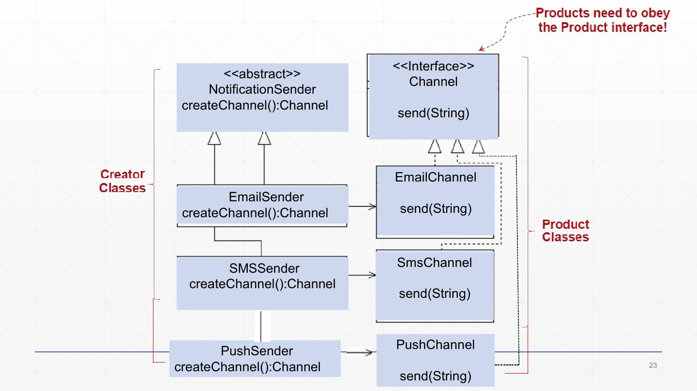
Creator classes: «abstract» NotificationSender with createChannel(): Channel; EmailSender, SMSSender and PushSender extend it.
Product classes: «Interface» Channel with send(String), realised by EmailChannel, SmsChannel and PushChannel. Each sender creates its matching channel.
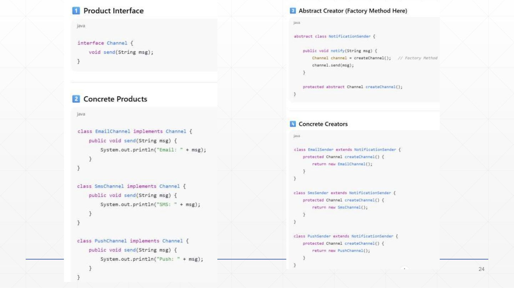
The Java solution:
| Code | What it does |
|---|---|
interface Channel { void send(String msg); } | The product. |
class EmailChannel implements Channel { public void send(String msg) { System.out.println("Email: " + msg); } } | Concrete products (SmsChannel, PushChannel similar). |
abstract class NotificationSender { public void notify(String msg) { Channel channel = createChannel(); channel.send(msg); } | The workflow, written once in the creator… |
protected abstract Channel createChannel(); } | …and the factory method it relies on. |
class EmailSender extends NotificationSender { protected Channel createChannel() { return new EmailChannel(); } } | Concrete creators decide the channel (SmsSender, PushSender similar). |
notify() is the “some operation” of the generic structure: it never names a concrete channel, which is exactly what makes adding WhatsApp a matter of two new classes.